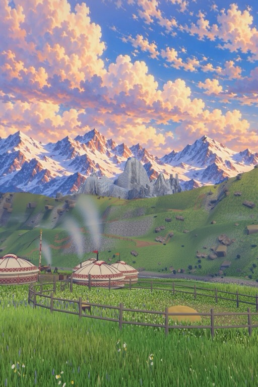
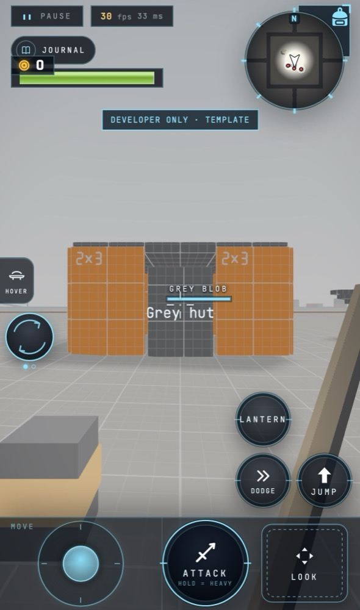

ProjectWildshard
One world. Every shard built by a player.

Play it in the browser. Build it in Claude Code.
A world made of shards.
Each shard is 500 × 500 × 500 metres, built by one author and placed on a shared grid. A server-owned highway runs between them; glowing seams stitch them together. The first grid is five by five around a fixed centre.
- A shard, one author
- The highway
- A seam
- The fixed centre

Shards side by side on the shared grid, stitched by their glowing seams.
Shards you can play today
Seven shards. Seven looks. One engine. Every plate is a capture from the game.

Driftwood Isle
A bright low-poly island in a toon ocean: pier, sailboat, shrine and wreck.

Pine Hollow
A boreal hunt from dawn fog to lantern-lit night. Face the Antler King.

Nalati Grasslands
The painted steppe on horseback. Tame horses, open the Golden King's kurgan.

Signal Dunes
Crack the bullwhip, drive off the dune rays and light the signal fire.

Sky Reach
Grassy islands over a sea of cloud, joined by glowing bridges only a hoverboard can ride.

Nine Dragon Stack
Lantern Square, halfway up a neon city stacked 500 metres high.

The Template
The greybox every new shard starts from.
How a shard is made
Claude Code is the level editor.
- 1
Get a creator key.
- 2
Install the Wildshard skill and SDK in your own Claude Code.
- 3
Describe it. Claude builds it on a floating cube.
- 4
wildshard buildandvalidatecheck every budget and edge. - 5
Walk it locally.
- 6
Upload it in the game.
Uploading is a set piece.
Plant a beacon at each of the eight corners, a ninth at the centre, and watch your shard rise onto the grid.
Strangers' worlds, safe on your phone.
A shard ships data and baked assets, never code that can touch your browser. Every shard is metered, deterministic and built against a versioned API.
Shards that grow.
-
Build with friendsCo-edit a shard together.
-
Renovate the abandonedA shard its author left behind can be taken up and rebuilt.
-
Your name travelsYour name and title go with you from shard to shard.
-
Two walletsSo no shard can break the economy.
Where we are.
Who's building it
Built the way its authors will build: two humans and a fleet of Claude Code agents.